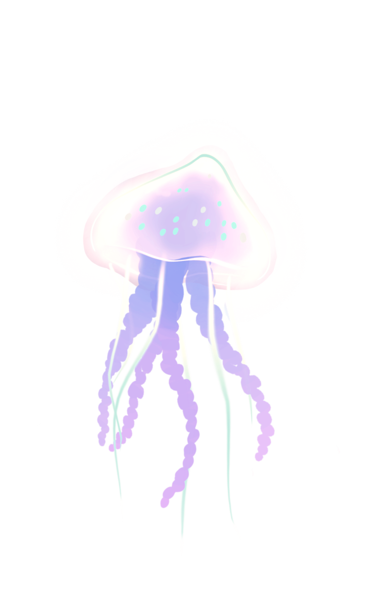
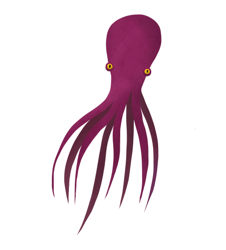
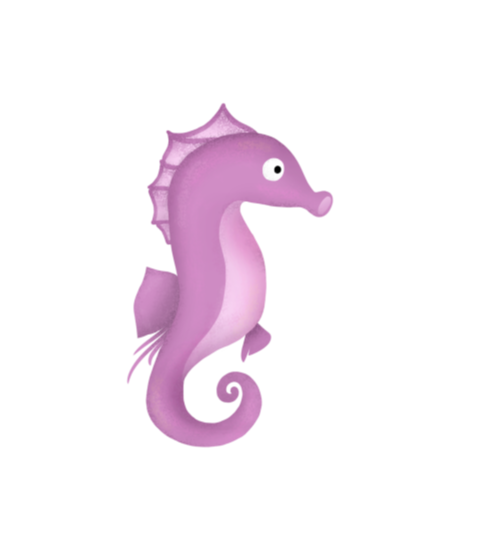
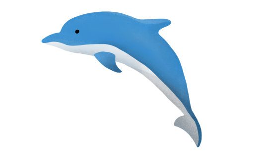
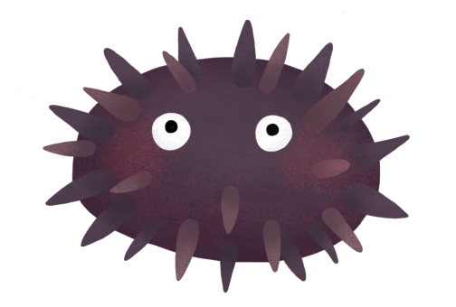
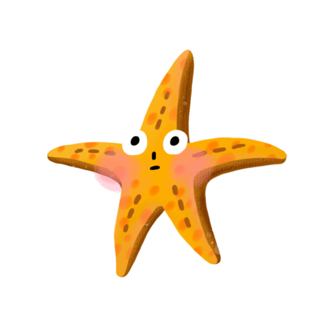
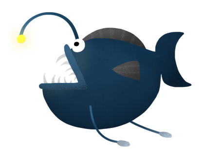
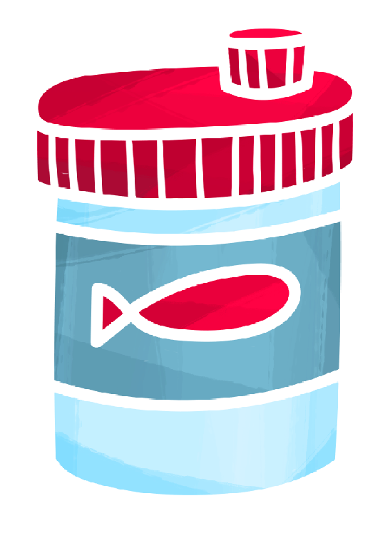

創作動機
〝性〞是在人一生中的必經之路，更是件神聖、健康的事，成年的我們正值對性充滿好奇的年紀，在性行為前，更該提早擁有健全的性知識。而不是壓抑在傳統思想下，對性避而不談。
創作主題-FIRST
情侶間有許多的第一次，第一次眼神接觸、第一次約會、第一次擁抱等，在遊戲中會體驗到兩人相識到相愛的艱辛，而遊戲的重點『最後一關』，象徵著每個人最重要的第一次，是否安全性行為常常造成一念之差終身之悔。
角色介紹

主角水母
(之所以會用水母當作主角,
是因為水母頭與保險套外型相似)

另外一半
生氣時會轉為紅色

章魚

海馬

海豚

海膽

海星

燈籠魚

魚群

魚飼料
關卡介紹
第一關 相遇
此關要幫助水母找到另一半,紫色水母被魚群擋住,
利用與角色互動可得到提示,找到飼料引開魚群。
第二關 牽手
相遇後要摸索對方的興趣就像是迷宮一樣,要花極大的耐心,利用方向鍵找到通往另一半心裡的路在遙遠的路都能牽著手一起走。
第三關 擁吻
約會講求的是一種氣氛,就像房間裡要點蠟燭一樣,使用者營造出好的氣氛後,兩隻水母能更進一步。
第四關 爭吵
情侶間一定會遇到爭吵,在另一半生氣跑走的狀態下,使用者透過引導水母追回她的芳心的過程,學習有時候道歉要的不是珍貴的禮物,只是一句對不起。
第五關 親密接觸
最珍貴的第一次也包含最親密的一次,此關為最後一關,有兩種結局,遊戲開始會有十秒鐘,若是帶領小水母往下逃出保險套,結局即為恭喜生出小水母;若是小水母停留在保險套內,即為避孕成功,恭喜還是兩人世界。